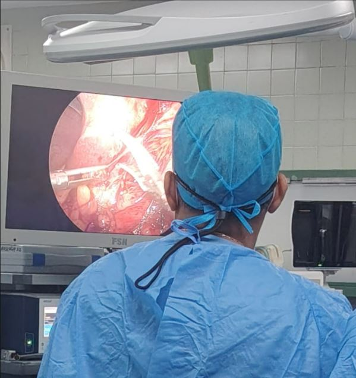
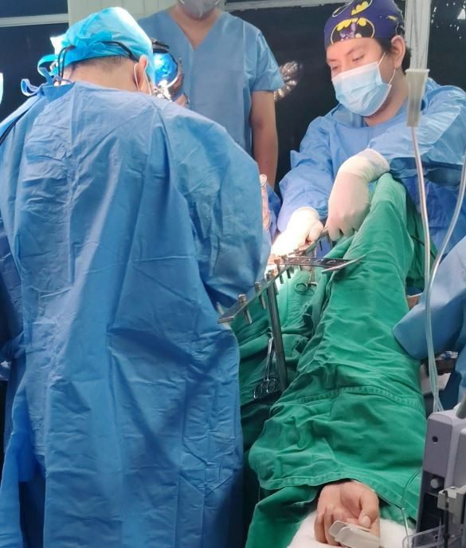

CLASE 01 · CIRUGÍA GENERAL
Teoría 1 — Paciente prequirúrgico, transoperatorio y postoperatorio inmediato
Evaluación integral del paciente quirúrgico, reducción del riesgo perioperatorio, preparación anestésica y quirúrgica, consentimiento informado, vigilancia postoperatoria, recuperación y prevención de complicaciones.
01
Primera clase
Concepto de periodo perioperatorio
El cuidado quirúrgico no empieza con la incisión ni termina al cerrar la piel. El periodo perioperatorio comprende un continuo que incluye la preparación previa a la cirugía, el acto anestésico-quirúrgico y la recuperación posterior. En este continuo, el cirujano debe reconocer qué factores pertenecen a la enfermedad quirúrgica, cuáles corresponden al estado basal del paciente y cuáles pueden ser modificados antes de llevarlo a sala de operaciones.

El preoperatorio puede entenderse como el conjunto organizado de acciones destinadas a evaluar, preparar y optimizar al paciente que presenta una enfermedad quirúrgica o potencialmente quirúrgica. No se limita a “pedir exámenes”: implica confirmar la indicación de cirugía, valorar comorbilidades, estimar riesgos, corregir alteraciones reversibles, planificar la anestesia, prever necesidades intraoperatorias y preparar el postoperatorio.
El postoperatorio comienza al finalizar la intervención y continúa hasta que el paciente alcanza una recuperación compatible con su situación previa o con el máximo nivel funcional esperable después de la cirugía. La recuperación no se reduce al alta hospitalaria: incluye cicatrización, rehabilitación, seguimiento y detección de complicaciones tardías.
BADBEAR.MED FIJA: El éxito quirúrgico no depende únicamente de una técnica operatoria correcta. Depende de la suma de selección adecuada + preparación preoperatoria + anestesia segura + cirugía técnicamente correcta + vigilancia postoperatoria.
TEORÍA 1.2 · BLOQUE OFICIAL
Líquidos y electrolitos
Este subtema pertenece al mismo bloque académico. Se desarrollará con su transcripción correspondiente para no mezclar ni inventar contenido.
Riesgo quirúrgico: qué significa realmente
El riesgo de una intervención es la probabilidad de que el paciente presente un desenlace adverso relacionado con su enfermedad, sus comorbilidades, la anestesia, la magnitud del procedimiento o la recuperación. Ninguna cirugía está completamente exenta de riesgo, incluso cuando se considera menor. La tarea clínica es reconocer el riesgo, cuantificarlo cuando sea posible y reducirlo.
El riesgo perioperatorio surge de la interacción de varios componentes. Un paciente joven y sano sometido a una cirugía menor no tiene el mismo riesgo que un adulto mayor con insuficiencia cardíaca sometido a cirugía abdominal mayor. Del mismo modo, una cirugía técnicamente sencilla puede volverse riesgosa si el paciente llega con sepsis, hipovolemia, trastornos electrolíticos o anticoagulación no controlada.
Factores del paciente
Edad, reserva fisiológica, capacidad funcional, estado nutricional, enfermedad cardiovascular, respiratoria, renal, hepática, endocrina, hematológica, infecciosa y neurológica.
Factores del procedimiento
Urgencia, duración, magnitud, sangrado esperado, contaminación, cambios hemodinámicos, posición quirúrgica y agresión fisiológica esperada.
Factores anestésicos
Vía aérea, técnica anestésica, respuesta hemodinámica, ventilación, analgesia, fármacos y necesidad de monitorización avanzada.
Factores del sistema
Experiencia del equipo, disponibilidad de sangre, UCI, instrumental, antibióticos, soporte diagnóstico y capacidad de respuesta ante complicaciones.
BADBEAR.MED FIJA: El riesgo perioperatorio es multifactorial. La clasificación ASA describe el estado físico, pero no sustituye una evaluación de riesgo completa.
Objetivos del preoperatorio
El objetivo fundamental es reducir la posibilidad de complicaciones prevenibles y llevar al paciente a la cirugía en las mejores condiciones razonablemente alcanzables. Esto exige identificar factores de riesgo y decidir cuáles deben modificarse antes de operar y cuáles deben manejarse durante y después del procedimiento.
1. Disminuir morbimortalidadPrevenir eventos cardiovasculares, respiratorios, hemorrágicos, infecciosos, tromboembólicos y metabólicos.
2. Confirmar que la cirugía está indicadaDefinir diagnóstico, objetivos del procedimiento, alternativas y beneficio esperado.
3. Optimizar comorbilidadesControlar enfermedades descompensadas y corregir alteraciones reversibles.
4. Preparar anestesia y vía aéreaDeterminar necesidades de monitorización, acceso venoso y estrategia anestésica.
5. Prever el postoperatorioAnalgesia, alimentación, movilización, líquidos, tromboprofilaxis, cuidados de heridas, drenajes y eventual UCI.
6. Facilitar recuperación funcionalLa meta no es solo sobrevivir a la cirugía: es recuperar autonomía y reintegrarse a sus actividades.
Cómo llega el paciente quirúrgico
La preparación varía según la vía de ingreso. En la cirugía electiva existe tiempo para estudiar y optimizar. En una emergencia, la preparación debe realizarse simultáneamente con la reanimación y no debe retrasar una intervención que salva la vida. En cirugía ambulatoria, además de los criterios clínicos, deben valorarse el soporte domiciliario, la comprensión de las indicaciones y la posibilidad de regresar rápidamente a un centro asistencial si aparece una complicación.
| Escenario | Prioridad | Conducta |
|---|---|---|
| Electiva | Optimización completa | Estudio dirigido, control de comorbilidades, planificación anestésica y quirúrgica. |
| Urgente | Resolver en tiempo limitado | Corregir lo esencial sin retrasar innecesariamente el control definitivo. |
| Emergencia | Salvar vida/órgano | Reanimación, monitorización y cirugía pueden ocurrir en paralelo. |
| Ambulatoria | Alta segura | Selección del paciente, acompañante, analgesia, tolerancia, deambulación e instrucciones de alarma. |
Historia clínica y examen físico preoperatorio
La anamnesis y el examen físico son el núcleo de la evaluación. Los exámenes auxiliares deben responder preguntas concretas; no sustituyen una historia bien hecha. Una evaluación adecuada no se limita al órgano que será operado: debe considerar al paciente como un sistema completo.

Historia clínica dirigida
Debe establecerse la enfermedad actual y la indicación quirúrgica, pero también los antecedentes que modifican el riesgo: cardiopatía isquémica, insuficiencia cardíaca, hipertensión, arritmias, EPOC o asma, tuberculosis activa o secuelas, enfermedad renal, diabetes, hepatopatía, trastornos hemorrágicos o trombóticos, infecciones recientes, anemia, cáncer, inmunosupresión y cirugías previas.
Es indispensable revisar medicación habitual: anticoagulantes, antiagregantes, insulina y antidiabéticos, corticoides, antihipertensivos, diuréticos, psicofármacos y productos herbales. También deben documentarse alergias, consumo de tabaco y alcohol, reacciones anestésicas previas y antecedentes familiares relevantes.
Examen físico
Debe incluir signos vitales, estado de hidratación, perfusión, evaluación cardiopulmonar, abdomen, estado neurológico, piel, extremidades y búsqueda de edema o signos de trombosis. La inspección de la vía aérea forma parte de la evaluación anestésica. En pacientes frágiles, la capacidad para movilizarse y realizar actividades cotidianas aporta información sobre la reserva funcional.
BADBEAR.MED FIJA: Un examen “normal” no significa “apto” automáticamente. La pregunta preoperatoria es: ¿hay algo que aumente el riesgo y que debamos corregir, estudiar o planificar antes de operar?
Exámenes auxiliares: pedir con propósito, no por rutina
Los estudios preoperatorios se solicitan según el tipo y magnitud de cirugía, edad, hallazgos clínicos, comorbilidades, medicación y posibilidad de que el resultado cambie la conducta. Un hemograma puede ser esencial ante sospecha de anemia o cirugía con sangrado esperado, pero puede aportar poco en una cirugía menor de un paciente sano. Lo mismo ocurre con función renal, electrolitos, coagulación, ECG, radiografía de tórax y otras pruebas.
| Estudio | Qué puede detectar | Cuándo cobra importancia |
|---|---|---|
| Hemograma | Anemia, leucocitosis, trombocitopenia | Sangrado esperado, síntomas, enfermedad crónica, cirugía mayor. |
| Glucosa / HbA1c | Hiperglucemia y control diabético | Diabetes conocida o sospechada; HbA1c según contexto. |
| Creatinina / electrolitos | Función renal, Na, K y alteraciones metabólicas | Riesgo renal, diuréticos, cirugía mayor, pérdidas digestivas o enfermedad sistémica. |
| Coagulación | Alteraciones de hemostasia | Historia hemorrágica, hepatopatía, anticoagulación o indicación específica. |
| ECG | Ritmo, conducción, signos de cardiopatía | Edad/riesgo cardiovascular, comorbilidad y cirugía de mayor estrés fisiológico. |
| Rx de tórax | Alteraciones pulmonares/cardiotorácicas | No debe ser automática; se utiliza cuando la historia o el procedimiento justifican el estudio. |
El resultado debe interpretarse. No basta verificar que el paciente “tiene hemograma” o “tiene creatinina”. Una leucocitosis inesperada, anemia importante, hiperglucemia, deterioro renal, alteración de coagulación o trastorno electrolítico puede obligar a repetir el estudio, investigar la causa, consultar a otra especialidad o posponer una cirugía electiva.
Actualización clínica BADBEAR.MED: La evaluación moderna evita baterías universales de pruebas. Se solicitan estudios cuando existe una indicación clínica o cuando el resultado puede modificar el manejo perioperatorio.
Optimización de patologías preexistentes
La enfermedad quirúrgica no borra las demás enfermedades del paciente. Una hernia o una colelitiasis pueden coexistir con diabetes descontrolada, hipertensión severa, insuficiencia cardíaca, EPOC, enfermedad renal o infección activa. En cirugía electiva, las condiciones descompensadas deben estabilizarse antes de operar cuando el beneficio de posponer supera el riesgo de esperar.
Optimizar no significa alcanzar “valores perfectos” en todos los pacientes. Significa llevar la condición a un estado en el que el riesgo sea aceptable, disponer de un plan de manejo intraoperatorio y prever la vigilancia postoperatoria. A veces esto requiere participación de medicina interna, cardiología, neumología, nefrología, endocrinología, hematología o infectología.
BADBEAR.MED FIJA: En cirugía electiva, una comorbilidad descompensada puede transformar una operación técnicamente sencilla en una intervención de alto riesgo.
Evaluación cardiovascular y respiratoria
La evaluación cardiovascular busca identificar enfermedad activa, estimar reserva funcional y definir si se requiere estudio adicional. El objetivo no es “conseguir un pase”, sino determinar si el procedimiento puede realizarse con seguridad y qué medidas de reducción de riesgo son necesarias.
Dolor torácico, disnea inexplicada, síncope, insuficiencia cardíaca descompensada, arritmias significativas o valvulopatía severa obligan a una valoración más cuidadosa. En pacientes estables, las pruebas adicionales deben indicarse cuando su resultado cambiará la conducta, evitando retrasos y estudios innecesarios.
En el componente respiratorio se revisan tabaquismo, asma, EPOC, infección respiratoria, apnea obstructiva del sueño, tuberculosis activa o secuelas, tolerancia al esfuerzo y hallazgos pulmonares. La radiografía y las pruebas funcionales se indican de manera selectiva.
Evaluación anestesiológica: ASA y vía aérea
La evaluación anestésica integra antecedentes, examen físico, vía aérea, ayuno, medicación, alergias, riesgo de aspiración, técnica anestésica y plan de analgesia. Una herramienta central es la clasificación de estado físico de la American Society of Anesthesiologists (ASA-PS).
| ASA | Estado físico | Idea para recordar |
|---|---|---|
| I | Paciente sano | Sin enfermedad sistémica relevante. |
| II | Enfermedad sistémica leve | Comorbilidad controlada sin limitación funcional importante. |
| III | Enfermedad sistémica severa | Enfermedad importante con impacto clínico o funcional. |
| IV | Enfermedad severa que amenaza constantemente la vida | Reserva fisiológica muy comprometida. |
| V | Paciente moribundo que no se espera sobreviva sin la operación | La cirugía es parte del intento de supervivencia. |
| VI | Paciente con muerte encefálica para donación de órganos | Clasificación especial para donante. |
La letra E puede añadirse cuando se trata de una emergencia. ASA ayuda a comunicar la carga de enfermedad sistémica, pero no es una calculadora aislada de mortalidad operatoria.
Mallampati y vía aérea
La clasificación de Mallampati describe qué estructuras orofaríngeas son visibles con la boca abierta y contribuye a estimar dificultad de laringoscopia. Debe combinarse con apertura oral, movilidad cervical, distancia tiromentoniana, anatomía facial, dentición y antecedentes de intubación difícil. Un Mallampati alto no determina por sí solo la técnica de intubación.
BADBEAR.MED FIJA: ASA = estado físico. Mallampati = componente de evaluación de vía aérea. Ninguna de las dos reemplaza la valoración perioperatoria completa.
Hemostasia, sangrado y tromboembolismo
La evaluación hemostática empieza con la historia: sangrado espontáneo, epistaxis frecuentes, equimosis extensas, hemorragia excesiva en cirugías previas, enfermedad hepática, antecedentes familiares y uso de anticoagulantes o antiagregantes. Los estudios de coagulación deben orientarse por esta información y por la magnitud del procedimiento.
Además del riesgo hemorrágico existe el riesgo de tromboembolismo venoso (TEV). Cáncer, inmovilidad, edad, obesidad, cirugía mayor, antecedente de trombosis, trombofilia y algunas enfermedades médicas aumentan el riesgo. La prevención puede incluir movilización precoz, dispositivos de compresión y/o anticoagulación farmacológica según la estratificación individual.
Actualización clínica BADBEAR.MED: La warfarina y los trombolíticos no son profilaxis rutinaria del TEV perioperatorio. La tromboprofilaxis debe individualizarse y equilibrar riesgo trombótico versus riesgo de sangrado.
Estado nutricional y capacidad de cicatrización
La malnutrición se asocia con peor cicatrización, mayor susceptibilidad a infección, debilidad, pérdida de masa muscular y recuperación prolongada. La evaluación debe considerar pérdida involuntaria de peso, disminución de ingesta, enfermedad hipercatabólica, duración del ayuno, cáncer, malabsorción, pancreatitis crónica y cirugías repetidas.
La albúmina baja se asocia con mayor riesgo perioperatorio, pero no debe interpretarse de manera aislada como “medidor puro” de nutrición, porque también disminuye en inflamación y enfermedad sistémica. La valoración nutricional es clínica y puede complementarse con herramientas de tamizaje, antropometría y laboratorio.
BADBEAR.MED FIJA: El paciente malnutrido no solo “tiene menos proteínas”: tiene menor reserva fisiológica, peor respuesta inmune y menor capacidad de tolerar la agresión quirúrgica.
Preoperatorio en emergencia
En una emergencia el tiempo es parte del tratamiento. La preparación debe enfocarse en lo que modifica supervivencia inmediata: vía aérea, respiración, circulación, accesos vasculares, monitorización, control de hemorragia, corrección de hipovolemia, identificación de sepsis, antibióticos cuando están indicados y control del foco.
Si existe infección grave, deben obtenerse cultivos cuando sea posible sin retrasar el inicio de antibióticos. El tratamiento empírico se elige según foco probable, gravedad, exposición previa a antimicrobianos y epidemiología local, y posteriormente se ajusta con los resultados microbiológicos.
El principio es evitar dos errores opuestos: retrasar una cirugía salvadora por intentar completar un “preoperatorio perfecto”, o entrar a sala sin corregir alteraciones inmediatas que sí pueden estabilizarse en minutos.
Consentimiento informado y relación médico-paciente
El consentimiento informado es un proceso de comunicación, no una firma administrativa. El paciente capaz debe comprender su diagnóstico, por qué se propone una operación, en qué consiste, cuáles son sus beneficios esperados, riesgos relevantes, alternativas —incluida la posibilidad de no operar cuando corresponda— y qué puede ocurrir durante la recuperación.
La explicación debe adaptarse al lenguaje y nivel de comprensión de la persona. El objetivo es una decisión autónoma y voluntaria. La firma documenta el proceso, pero no lo reemplaza. Cuando el paciente competente cambia de opinión, puede retirar su consentimiento antes del procedimiento.
En situaciones de emergencia con incapacidad para decidir, la conducta depende del contexto clínico, la normativa aplicable y la existencia de representantes o directivas previas. La prioridad es proteger la vida y los intereses del paciente dentro del marco ético y legal.
BADBEAR.MED FIJA: Consentimiento informado ≠ “firme aquí”. Debe existir información, comprensión, voluntariedad y posibilidad real de preguntar y decidir.
Postoperatorio: etapas y objetivos
Las divisiones horarias del postoperatorio varían entre autores. Para estudiar puede separarse en inmediato, mediato y tardío, entendiendo que lo importante no es memorizar una frontera rígida, sino conocer los objetivos de cada fase.
Inmediato
Desde el fin de la cirugía y recuperación anestésica inicial. Prioridades: vía aérea, ventilación, hemodinamia, estado neurológico, dolor, sangrado, temperatura y diuresis.
Mediato
Recuperación fisiológica progresiva: movilización, tolerancia oral, función gastrointestinal, balance hídrico, cuidado de herida, catéteres y drenajes.
Tardío
Desde el alta hasta la recuperación funcional: cicatrización, rehabilitación, retorno laboral, seguimiento y detección de complicaciones tardías.
URPA: recuperación postanestésica
Al salir del quirófano, el paciente suele pasar a la unidad de recuperación postanestésica (URPA). Allí se vigilan los efectos residuales de anestésicos y relajantes, permeabilidad de la vía aérea, ventilación, oxigenación, estabilidad circulatoria, nivel de conciencia, dolor, náuseas, temperatura y sangrado.
Cuidados postoperatorios esenciales
1. Monitorización
Frecuencia cardíaca, presión arterial, frecuencia respiratoria, saturación, temperatura, estado mental, perfusión, diuresis y balance hídrico deben interpretarse como tendencias. Una taquicardia persistente no debe atribuirse automáticamente al dolor: puede indicar hipovolemia, sangrado, sepsis, hipoxemia o tromboembolismo.
2. Dolor
El dolor es subjetivo y debe evaluarse activamente. La ausencia de queja no garantiza ausencia de dolor. Una analgesia adecuada favorece ventilación profunda, tos, movilización, sueño y recuperación. El enfoque suele ser multimodal, individualizando según procedimiento, función renal/hepática, riesgo hemorrágico y antecedentes.
3. Movilización y alimentación
En muchos procedimientos, la movilización y la ingesta tempranas cuando son seguras forman parte de la recuperación mejorada. La vía oral se reinicia según estado de conciencia, riesgo de aspiración, función gastrointestinal y tipo de cirugía. No debe mantenerse ayuno prolongado sin una razón concreta.
4. Líquidos y electrolitos
Si el paciente no puede cubrir requerimientos por vía oral, se planifica la terapia intravenosa considerando mantenimiento, pérdidas, redistribución, función renal, diuresis y laboratorio. Tanto el déficit como la sobrecarga pueden producir complicaciones.
5. Herida, drenajes y dispositivos
Se evalúan dolor local, eritema, secreción, dehiscencia y sangrado. Las sondas vesicales, nasogástricas, catéteres y drenajes deben tener una indicación concreta y retirarse tan pronto como dejen de ser necesarios, reduciendo infección, inmovilidad y molestias.
6. Tromboprofilaxis
Las medidas de prevención se continúan de acuerdo con el riesgo y el tipo de procedimiento. La movilización precoz es una medida central; en pacientes seleccionados se añaden métodos mecánicos y/o farmacológicos.
7. Antibióticos: profilaxis versus tratamiento
La profilaxis antibiótica se administra para disminuir infección del sitio quirúrgico en procedimientos en los que está indicada y se programa para alcanzar concentraciones adecuadas al momento de la incisión. No debe prolongarse como “seguro” si no existe una infección que tratar. En cambio, si el paciente ya presenta infección —por ejemplo, una perforación con contaminación y pus— el antibiótico es terapéutico y su duración depende del foco, control quirúrgico y evolución.
BADBEAR.MED FIJA: En postoperatorio piensa todos los días en cinco preguntas: ¿perfusiona?, ¿respira?, ¿duele?, ¿tolera/moviliza?, ¿hay signos de complicación?
Vigilancia de complicaciones y cuándo escalar cuidados
La evolución debe revisarse a diario y cualquier desviación debe explicarse. Sangrado, hipotensión, taquicardia persistente, oliguria, hipoxemia, fiebre, deterioro de conciencia, dolor desproporcionado, distensión abdominal progresiva, vómitos persistentes, ausencia prolongada de recuperación gastrointestinal, secreción purulenta o dehiscencia requieren evaluación dirigida.
Un paciente crítico, con disfunción orgánica, necesidad de ventilación o soporte vasoactivo, cirugía de gran magnitud o complicación intraoperatoria importante puede requerir UCI o una unidad de vigilancia avanzada. Esta necesidad debe anticiparse antes de iniciar una cirugía de alto riesgo siempre que sea posible.
HemodinámicasHipotensión, taquicardia, sangrado, piel fría, oliguria.
RespiratoriasHipoxemia, disnea, trabajo respiratorio, disminución del nivel de conciencia.
InfecciosasFiebre con deterioro, pus, sepsis, infección de herida o foco intraabdominal.
QuirúrgicasDolor creciente, dehiscencia, distensión, sangrado por drenajes, sospecha de fuga.
Repaso final de alta rentabilidad
BADBEAR.MED FIJA: El preoperatorio identifica y modifica riesgos; no es una colección de exámenes.
BADBEAR.MED FIJA: La historia clínica y el examen físico dirigen las pruebas complementarias.
BADBEAR.MED FIJA: ASA comunica estado físico; el riesgo quirúrgico total depende del paciente + cirugía + anestesia + contexto.
BADBEAR.MED FIJA: Mallampati es solo una parte de la evaluación de vía aérea.
BADBEAR.MED FIJA: Consentimiento informado es conversación y decisión; la firma solo documenta el proceso.
BADBEAR.MED FIJA: En emergencia, reanimar y controlar la causa ocurren en paralelo; no retrasar una cirugía salvadora por estudios innecesarios.
BADBEAR.MED FIJA: Postoperatorio seguro = vigilancia + analgesia + movilización + nutrición/vía oral + balance + prevención de TEV + cuidado de heridas/dispositivos.
BADBEAR.MED FIJA: Antibiótico profiláctico y antibiótico terapéutico son conceptos distintos.
¿Terminaste la clase?
Marca el tema como revisado para guardar tu progreso en este dispositivo.